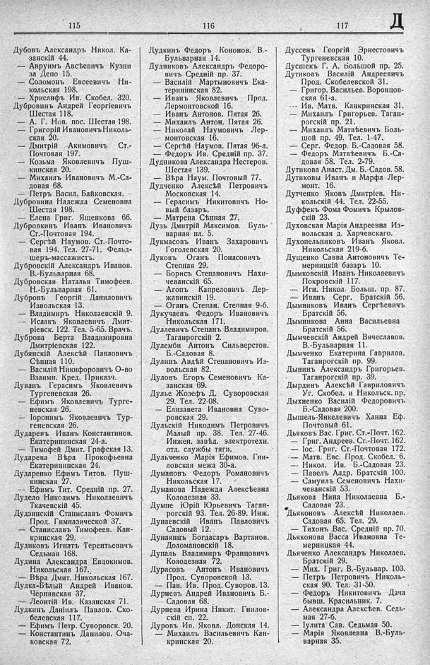

Лист источника 389
Скан

Распознанный текст
115
Дубовъ Александръ Никол. Ка-
занскій 44.
— Авруимъ Авсѣевичъ Кузни
за Депо 15.
— Соломонъ Евсеевичъ Ни-
кольская 198.
— Хрисанфъ Ив. Скобел. 320.
Дубровинъ Андрей Георгіевичъ
Шестая 118.
— А. Г. Нов. пос. Шестая 198.
— Григорій Ивановичъ Николь-
ская 20.
— Дмитрій Акимовичъ Ст.-
Почтовая 197.
— Козьма Яковлевичъ Пуш-
кинская 20.
— Михаилъ Ивановичъ М.-Са-
довая 68.
— Петръ Васил. Байковская.
Дубровина Надежда Семеновна
Шестая 198.
— Елена Григ. Ященкова 66.
Дубровкинъ Иванъ Ивановичъ
Ст.-Почтовая 194.
— Сергѣй Наумов. Ст.-Почто-
вая 194. Тел. 27-71. Фельд-
шеръ-массажистъ.
Дубровскій Александръ Иванов.
В.-Бульварная 68.
Дубровская Наталья Тимофеев.
Н.-Бульварная 61.
Дубровъ Георгій Даниловичъ
Извольская 13.
— Владимиръ Николаевскій 9.
— Исаакъ Яковлевичъ Дмит-
ріевск. 122. Тел. 5-65. Врачъ.
Дуброва Берта Владимировна
Дмитріевская 122.
Дубянскій Алексѣй Павловичъ
Сѣнная 110.
— Василій Никифоровичъ О-во
Взаимн. Кред. Приказч.
Дуванъ Герасимъ Яковлевичъ
Тургеневская 26.
— Ефимъ Яковлевичъ Турге-
невская 26.
— Іоронимъ Яковлевичъ Тур-
геневская 26.
Дударевъ Иванъ Константинов.
Екатерининская 24-а.
— Тимофей Дмит. Графская 13.
Дударева Вѣра Прокофьевна
Екатерининская 24.
Дударенко Ефимъ Титов. Пуш-
кинская 27.
— Ефимъ Тит. Средній пр. 27.
Дудело Никодимъ Николаевичъ
Ткачевскій 45.
Дудзинскій Станиславъ Фомичъ
Прод. Гимназической 37.
— Станиславъ Тимофеев. Кан-
кринская 29.
Дудиковъ Игнатъ Терентьевичъ
Седьмая 168.
Дудина Александра Евдокимов.
Никольская 167.
— Вѣра Дмит. Никольская 167.
Дудка-Бѣлый Андрей Иванов.
Чернявская 37.
— Леонтій Ив. Казанская 71.
Дудкинъ Даніилъ Павлов. Ско-
белевская 117.
— Ефимъ Петр. Суворовск. 20.
— Константинъ Данилов. Оча-
ковская 72.
116
Дудкинъ Федоръ Кононов. В.-
Бульварная 14.
Дудниковъ Александръ Федоро-
вичъ Средній пр. 37.
— Василій Мартыновичъ Ека-
терининская 82.
— Иванъ Яковлевичъ Прод.
Лермонтовской 16.
— Иванъ Антонов. Пятая 26.
— Михаилъ Антон. Пятая 26.
— Николай Наумовичъ Лер-
монтовская 16.
— Сергѣй Наумов. Пятая 96-а.
— Федоръ Ив. Средній пр. 37.
Дудникова Александра Нестеров.
Шестая 139.
— Вѣра Наум. Почтовый 77.
Дудченко Алексѣй Петровичъ
Московская 14.
— Герасимъ Никитовичъ Но-
вый базаръ.
— Матрена Сѣнная 27.
Дузь Дмитрій Максимов. Буль-
варная пл. 5.
Дукмасовъ Иванъ Захаровичъ
Гоголевская 20.
Дуковъ Оганъ Понасовичъ
Степная 29.
— Борисъ Степановичъ Нахи-
чеванскій 65.
— Агопъ Капреловичъ Дер-
жавинскій 19.
— Оганъ Степан. Степная 9-б.
Дукучаевъ Федоръ Ивановичъ
Никольская 171.
Дуллевичъ Степанъ Владимиров.
Таганрогскій 2.
Дулемби Антонъ Сильверстов.
Б.-Садовая 8.
Дулинъ Авдѣй Степановичъ Из-
вольская 82.
Дуловъ Егоръ Семеновичъ Ка-
занская 69.
Дулье Жозефъ Д. Суворовская
29. Тел. 22-08.
— Елизавета Ивановна Суво-
ровская 29.
Дульскій Никодимъ Петровичъ
Малый пр. 38. Тел. 27-46.
Инжен. завѣд. электротехн.
отд. службы тяги.
Дульченко Марія Ефимов. Гни-
ловская межа 30-а.
Думановъ Федоръ Романовичъ
Никольская 17.
Думанова Надежда Алексѣевна
Колодезная 33.
Думпе Юрій Юрьевичъ Таган-
рогскій 93. Тел. 26-89. Инж.
Дунаевскій Иванъ Павловичъ
Садовый 12.
Дунянцъ Богдасаръ Вартанов.
Доломановскій 18.
Дупалъ Владимиръ Францовичъ
Колодезная 72.
Дурасовъ Антонъ Ивановичъ
Прод. Суворовской 13.
— Пав. Ив. Прод. Суворов. 13.
Дурневъ Андрей Ивановичъ Б.-
Садовая 68.
Дурнева Ирина Никит. Гнилов-
скій сп. 22.
Дуровъ Ив. Яковл. Донская 14.
— Михаилъ Васильевичъ Кан-
кринская 20.
117 Д
Дуссенъ Георгій Эрнестовичъ
Тургеневская 10.
Дусшекъ Г. А. Большой пр. 25.
Дутиковъ Василій Андреевичъ
Прод. Скобелевской 31.
— Григор. Васильев. Воронцов-
ская 61-а.
--- Ив. Матв. Канкринская 31.
— Михаилъ Григорьев. Таган-
рогскій пр. 21.
— Михаилъ Матвѣевичъ Боль-
шой пр. 49. Тел. 1-47.
— Серг. Федор. Б.-Садовая 58.
— Федоръ Матвѣевичъ Б.-Са-
довая 58. Тел. 2-79.
Дутикова Анаст. Дм. Б.-Садов. 58.
Дутиковы Иванъ и Марфа Лер-
монт. 16.
Дутченко Яковъ Дмитріев. Ни-
кольскій 44. Тел. 22-55.
Дуффекъ Фома Фомичъ Крылов-
скій 23.
Духовская Марія Андреевна Из-
вольская д. Харчевскаго.
Духопельниковъ Иванъ Яковл.
Никольская 219-б.
Дущенко Савва Антоновичъ Те-
мерницкій базаръ 10.
Дымковскій Иванъ Николаевичъ
Покровскій 117.
— Игн. Никол. Больш. пр. 87.
— Иванъ Серг. Братскій 56.
Дымниковъ Иванъ Сергѣевичъ
Братскій 56.
Дымникова Анна Васильевна
Братскій 56.
Дымчевскій Андрей Вячеславов.
В.-Бульварная 11.
Дымченко Екатерина Гаврилов.
Таганрогскій пр. 99.
Дынинъ Александръ Григорьев.
Таганрогскій пр. 39.
Дырдинъ Алексѣй Гавриловичъ
Уг. Скобел. и Никольск. пр.
Дыхненко Василій Федоровичъ
Б.-Садовая 200.
Дышель-Янкелевичъ Ханна Еф.
Почтовый 61.
Дьяковъ Вас. Григ. Ст.-Почт. 162.
— Григ. Андреев. Ст.-Почт. 162.
— Іос. Григ. Ст.-Почтовая 172.
— Матв. Евс. Прод. Скобел. 6.
— Никол. Ив. Б.-Садовая 23.
— Павелъ Алдр. Братскій 100.
— Самуилъ Семеновичъ Нахи-
чеванскій 53.
Дьякова Нина Николаевна Б.-
Садовая 23.
Дьяконовъ Алексѣй Николаев.
Садовая 65. Тел. 29.
— Тихонъ Вас. Средній пр. 70.
Дьяконова Васса Ивановна Те-
мерницкая 44.
Дьяченко Александръ Николаев.
Братскій 29.
— Мих. Григ. В.-Бульвар. 103.
— Петръ Петровичъ Николь-
ская 90. Тел. 31-50.
— Федоръ Никитовичъ Дача
бывш. Красильник. 7.
— Александра Алексѣев. Седь-
мая 27-б.
— Іулита Сав. Седьмая 50.
— Марія Яковлевна В.-Буль-
варная 35.